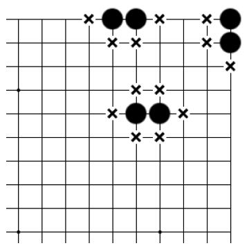
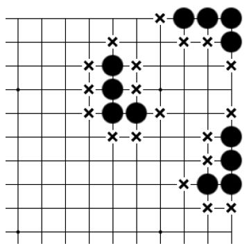

第四章 连接与切断
第一节 什么是一块棋
两个或两个以上连接到一起的棋子就可以叫作一块棋。连接是指一方两个或以上的棋子紧挨着，并且顺着棋盘上的线路，组成一个不可分割的整体。

基本图一

基本图二
基本图一：角上相连的两个棋子有三口气，边上相连的两个棋子有四口气，中腹相连的两个棋子有六口气。
基本图二：角上相连的四个棋子有四口气，边上相连的四个棋子有六口气，中腹相连的四个棋子有九口气。
通过基本图一和基本图二可以看到两个要点：①连接的子越多，气（即出路）也随之增多；②从棋子在棋盘上的位置来看，中腹的子气最多，边上次之，角上最少。